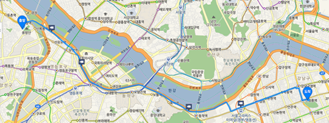
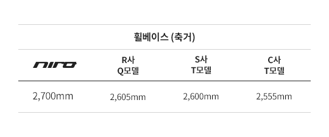
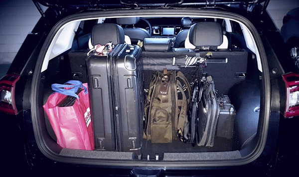

TV 광고를 보고 기아의 SMART SUV NIRO를 처음 알게 되었는데요. “저 차는 뭐지?”란 궁금증에 찾아본 니로의 장점이 너무 많았습니다. 첨단 장비, 연비, 실내공간, 정숙성, 실 구매가, 무상보증, 친환경차 혜택 그 중에서도 니로의 연비와 실내공간이 무척이나 제 마음에 쏙 들었습니다. 먼저 니로의 엄청난 연비를 알아볼까요? 참고로 제 생애 첫 차는 기아의 포르테였습니다. 2008년 구매한 후 8년 넘게 저와 함께한 녀석이었죠. 최근에 연비 기준이 엄격해졌지만, 그 당시 포르테의 공인 연비는 14km/L로 나쁘지 않았습니다. 하지만, 신연비 측정법이 적용된 니로의 연비와 비교한다면 상대가 되지 않겠죠. 그럼 본격적으로 포르테와 니로의 연비를 비교해 보겠습니다. 아래 경로는 제가 매일 출근하는 코스입니다. 약 23km 정도 됩니다.
차량 이동이 많아 정체가 심한 올림픽대로를 경유하기 때문에 포르테를 운행했을 때 연비는 11.6km/L 정도 되었는데요. 요즘 니로를 타고 매일 출퇴근할 때 연비 때문에 화들짝 놀랍니다. 왜냐하면 18인치 타이어를 장착한 제 니로의 평균 연비가 무려 24.2km/L나 나오기 때문입니다. 겨울이 코앞에 다가와 아침 저녁으로 쌀쌀해 히터를 켜고 다녀도 이렇게 놀라운 연비가 가능하다니 놀라울 따름입니다.
그리고 나의 운전 모드를 확인할 수 있는데, 다음엔 100% 경제운전에 도전해 봐야겠습니다. 7인치 순정 내비게이션을 옵션으로 장착한 제 니로에는 연비 관련 정보가 아래와 같이 다양하게 디스플레이됩니다. 운행중인 현재 시간 30분 전부터 현재까지의 전기모터 사용량과 하이브리드 연비를 볼 수 있습니다. 포르테를 운행했을 때는 한 달에 적어도 3~4번 가득 주유를 했는데, 니로를 운행하고부터는 언제 주유했는지 까먹을 정도입니다. 니로의 연비 자랑 좀 더해볼까요~? 첫 주유 후 41일 만에 주유를 했는데 아래와 같이 실제 주행거리 대비 연비가 나왔습니다.
915km(11/8 가득 주유) - 93km(9/29 가득 주유) = 총 주행 거리822km
9/29 주유비 53,000원/1L에 1,438원 = 총 주유량36.8L
실제 주행거리 대비 연비는 무려 22.3km/L (822km/36.8L)입니다.
주유 경고등이 켜졌을 때 주유했으니 이보다 연비는 살짝 높을 듯합니다. 제가 지금까지 경험할 수 없었던 연비가 가능했던 것은 바로 니로의 하이브리드 시스템 덕분이죠.
소형 SUV 중 가장 큰
트렁크 적재공간입니다.
2열(뒷좌석) 전체를 폴딩해서 짐을 적재한 상태인데, 생각보다 엄청난 양의 짐을 적재할 수 있습니다. 또한 2열(뒷좌석)은 6:4 분할 폴딩 기능이 있어 승차 인원수와 적재물의 양에 따라 공간을 자유롭게 활용할 수 있습니다. 저는 사랑하는 아내와 딸과 함께 가족캠핑을 종종 떠납니다. 캠핑시 이것저것 챙겨야 할 장비들이 많은 편이죠. 특히 우리 딸은 캠핑장에 꼭 자전거를 가져간답니다. 자전거를 차에 싣는다..사실 자전거 캐리어가 있으면 모를까, 트렁크에 자전거를 넣는 건 쉬운 일이 아닙니다. 이전에 타던 차는 자전거를 분해해서 트렁크와 조수석 앞에 적재했었죠. 그냥 넣으려면 바퀴와 함께 뒷좌석에 타야 하니까요. 그런데 니로는 뒤 트렁크에 분해 없이 들어 더라구요, 니로를 사고 처음 캠핑 떠난 날, 낑낑대며 자전거 조립한다고 힘쓰지 않아 정말 좋았습니다. 니로의 실내공간에 엄지를 들고 싶네요.
* 위 정보는 각 제조업체의 카다로그 및 홈페이지에 공개된 자료를 바탕으로 작성하였습니다.
저는 직업 특성상 출장이 잦아 트렁크에 많은 짐을 실어야 합니다. 하지만 제 생애 첫차는 그런 저를 만족시켜 주지 못했죠ㅠㅠ. 그래서 니로를 구입할 때 트렁크의 크기도 꼼꼼히 비교했습니다.
폴딩 전에는 427리터, 폴딩 후에는 1,425리터로 소형SUV 중에서는 가장 큰 적재공간을 가진 것이 너무 좋았습니다. 또한 동급 모델 중 가장 긴 휠베이스로 여유로운 뒷좌석도 매력적이었습니다.
서비스 엔지니어인 저는 가끔 현미경 설치하러 지방 출장을 갑니다. 그럴 때마다 부피가 큰 현미경과 현미경 관련 유닛들을 차에 싣고 가야 하는데 니로는 러기지 공간이 넓어 현미경 2세트 정도는 가뿐하게 적재할 수 있어 얼마나 편리한지 몰라요. 그리고 회사 동료 2~3명과 함께 갈 때는 2열 시트를 적절하게 조정하여 짐을 효율적으로 적재할 수 있죠. 특히 장거리 출장갈 때 니로의 놀라운 연비는 한마디로 대 만족입니다. 그럼, 니로의 트렁크에 짐이 얼마나 들어가는지 한번 살펴볼까요? 기본 상태에서 짐을 적재한 상태입니다. 일반 세단에서는 불가능한 여행가방 세워 넣기가 가능합니다.
추가로 트렁크 하단에 별도의 수납공간이 마련되어 있어 트렁크공간의 활용이 자유로워졌습니다. 평소에 자주 사용하지 않는 물건이나, 적재할 때 미관상 좋지 않은 물건들은 아래 수납공간에 넣으면 됩니다.
치명적인 조용함?
그리고 엄청난 세제혜택!
세상에 완벽한 차는 없는 법! 니로에게도 치명적인(?) 단점 아닌 장점이 있습니다. 하이브리드 차량인 관계로 시동이 걸렸는지 안 걸렸는지 알 수 없을 정도의 실내 정숙성이 탁월하다는 건데요, 그래서 동네 골목길을 지나갈 때면 사람들이 잘 비켜주지 않네요. 그리고 현재 니로는 정부의 세제 혜택으로 취득세를 140만원 감면받을 수 있고 환경부 하이브리드 자동차 구매보조금 (https://hybridbonus.or.kr/) 100만원을 구매 후 별도 신청하면 지급됩니다. 타사의 경쟁 SUV보다 저렴한 가격으로 구매할 수 있으니 이 정도면 엄청난 혜택 아닐까요?
참고로 니로의 1년 자동차세는 약 28만원입니다. 소소하지만 공영주차장 주차비 50% 할인과 남산터널 혼잡통행료 면제 등 추가 혜택도 받을 수 있답니다.
그리고 기아차 첫 구매시 레드포인트를 7만 포인트 적립해주는데요. 저는 기아차 2회차 구매 고객이라 무려 14만포인트를 받았습니다. 이렇게 적립받은 포인트는 기아자동차 레드멤버스(http://red.kia.com/kr/kindex.jsp)에서 차량 케어서비스 및 차량용품을 구매하는 데 잘 이용했답니다. 이 정도 혜택이 주어지면, 현명한 사람만이 니로를 구매하지 않을까요? 탁월한 니로를 선택한 저는 매일 매일 운전하는 순간이 행복합니다. 지금까지 내가 경험하지 못한 SUV의 신세계, NIRO였습니다.